Популярные виды ловли
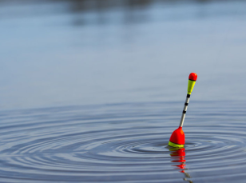
Полплавочная ловля
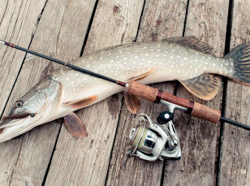
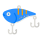
Спиннинговая ловля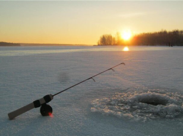
Зимняя ловляПоплавочная ловля
Поплавочная ловля — это способ рыбалки, при котором поклёвка рыбы определяется по поведению поплавка на поверхности воды. Поплавок удерживает крючок с наживкой на нужной глубине и служит сигнализатором: он тонет, ложится на бок или уходит в сторону, когда рыба берёт приманку. Такой вид ловли, по мнению большинства, считается самым простым в освоении, ведь в рыбалке на поплавок не обязательно уметь вязать сложные узлы или виртуозно забрасывать удочку, а также для успешной ловли не требуются дорогие снасти или приманки, даже с помощью удочки из палки, с навозным червем или хлебом в качестве наживки можно наловить неплохое количество хвостов, если знать все тонкости этого вида рыбалки.
Плюсы вида ловли:
- Простота и доступность;
- Подходит для большинства пресноводных рыб;
- Не требует дорогого оборудования;
- Можно ловить на реках, озёрах, прудах и даже в море у берега;
- Маховое удилище
- Болонское удилище
- Катушки
Снасти для полавочной ловли:
Классическая «удочка без катушки». Леска крепится к кончику... Лучшая длина удочки для новичка: 4-6 м.

Телескопическое удилище с кольцами и катушкой. Позволяет делать дальние забросы и ловить на течении. Самая подходящая длина: 5-7 м.

На самом деле новичку в рыбалке не стоит заботиться о выборе катушки на болонское удилище, будет достаточно простой инерционной катушки или небольшой безынерционной катушки размера 1000-2500 (подробнее о катушках в разделе "Навыки рыболова").
- Глухая оснастка
- основная леска 0,14–0,18 мм;
- поплавок 1–3 г;
- дробинки-грузила;
- поводок 0,10–0,14 мм;
- крючок №10–16;
- стопорки;
- Скользящая оснастка
- Оснастка для течения
- Размеры крючков для самых распространённых видов рыб:
- для плотвы — №14–16;
- для карася — №10–14;
- для леща — №8–12;
Виды оснасток:
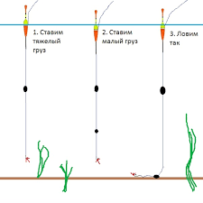
Оснастка очень похожая на глухую оснастку, единственное отличие заключается в том, что в ней используется поплавок с одной точкой крепления, который закрепляется на леске с помощью карабина и двух стопорков.
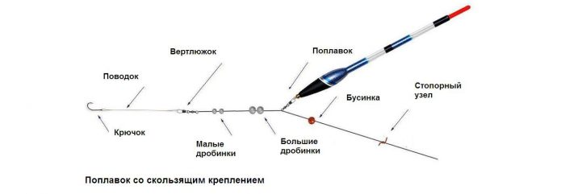
Снова монтаж, похожий на самую простую оснастку, только в ней грузила располагают «гирляндой», чтобы наживка шла у дна на течении.

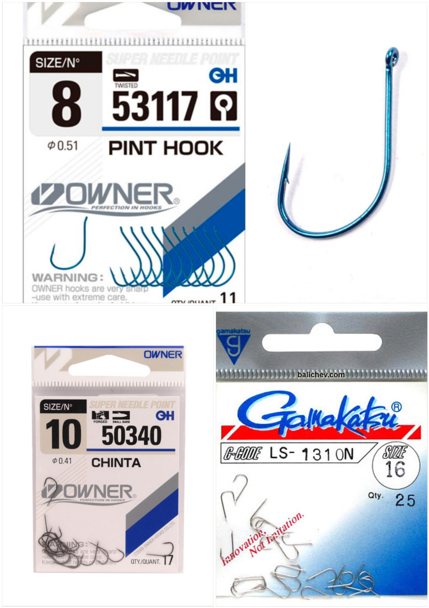
Подробнее о снастях в разделе "Навыки рыболова"
Наживки и насадки:
Животные наживки: червь, опарыш, мотыль и прочие виды насекомых.
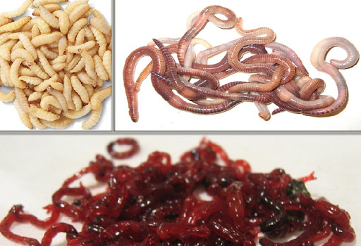
Растительные наживки: перловка, кукуруза, различное тесто, манка, хлеб.

В основном животные наживки используют весной, осенью или поздним летом, ведь в это время они более эффективны, растительные же насадки используют летом, но бывают и исключения.
Какую рыбу можно поймать на территории России на поплавок?
В основном в водоемах России на поплавок ловят карася и плотву в озерах и старицах, в реках можно поймать леща и густеру, также частым уловом может быть окунь и уклейка, на крючок даже может попасться голавль, язь, елец, красноперка, но они встречаются реже и их придется поискать, ещё более редкими экземпляром считается линь, на быстрых реках Урала или Сибири можно поймать форель или хариуса, но эти виды рыб встречаются крайне редко, также с помощью поплавочной ловли можно поймать некрупных карпов на платных водоемах.
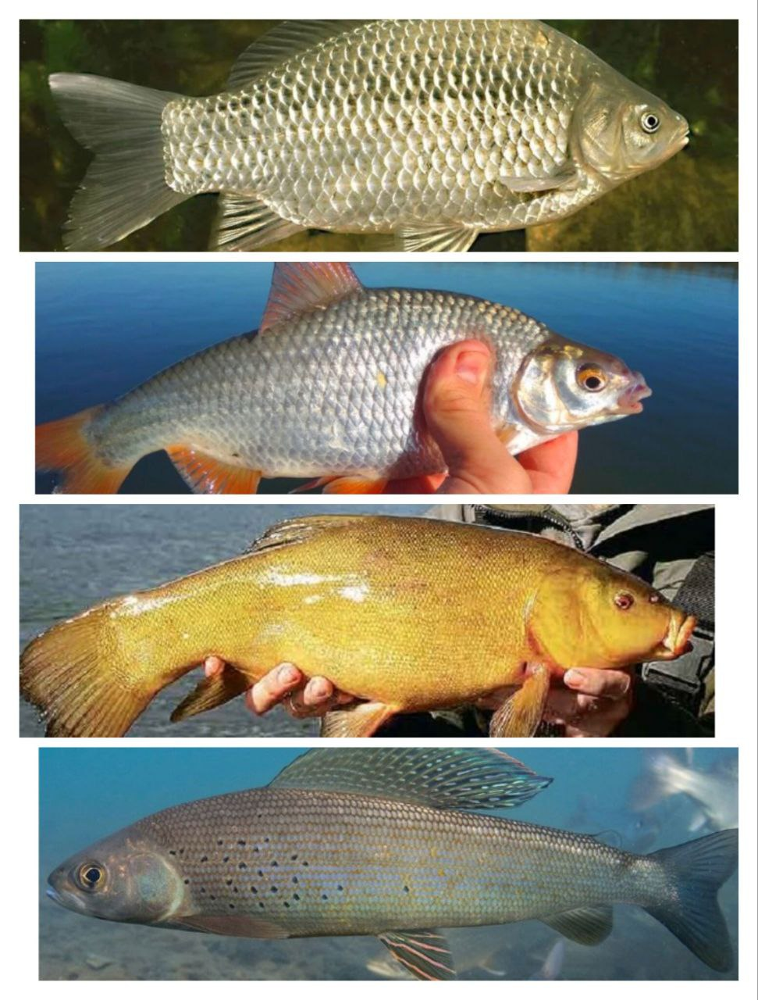
Где и когда лучше ловить на поплавок?
Самое лучшее время для ловли на поплавок – это весна, то время, когда лед уже растаял, и еще не началась жара, в этот период рыба особенно прожорлива, ведь она готовиться к нересту, но, если собираетесь идти на рыбалку весной, сначала нужно ознакомиться с законом о нерестовом запрете (подробнее о нерестовом запрете в разделе "Правила и безопасность"). Также на поплавок можно рыбачить ранней осенью, когда рыба готовится к заморозкам, и летом, когда температура не превышает 25℃, хотя летом лучше рыбачить утром (5:00 – 12:00) или вечером (16:00 – 20:00), конечно, можно рыбачить и ночью, но для новичка в рыбалке это будет не совсем удобно и безопасно. Что же насчет места ловли? Тут все просто, начинающему рыболову лучше рыбачить на озерах, старицах или в заводях рек, там, где нет сильного течения, ведь для рыбалки на течении нужна правильная техника. Ну и безусловно при выборе водоема нужно обращать внимание на его чистоту и узнавать о наличии рыбы в этом водоеме.
Донная ловля
Донная ловля — это способ рыбалки, при котором наживка находится на дне или рядом с ним. Рыба подходит к прикормленному месту и находит крючок с наживкой. В донной ловле выделют несколько видов, такие как донка с кормушкой или фидер (самый современный и удобный вид донной ловли по мнению большинсва).
Основные виды донной ловли:
Доночная ловля(ловля на донку) - простая оснастка, выжидание рыбы, освоит любой.
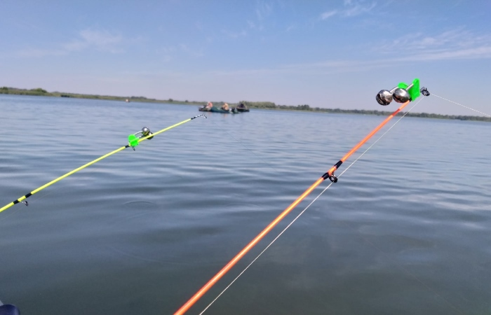
Фидер - грамотное кормление, частые перезабросы, хороший клев.

- Снасти для донки:
- Спиннинг с большим тестом/фидерное удилище с максимальным тестом от 60г до 160 г в зависимости от водоема;
- Безынерционная катушка 3500-5000 размера;
- Леска/плетенка, длина должна подходить под размер катушки;
- Донные оснастки, поводковый материал, набор крючков, ножницы для лески или мультитул для рыбалки;
- Сигнализаторы поклевки
- Оснастка донки:
- Как ловить на донку?
Доночная ловля
Донка - это простая рыболовная снасть, предназначенная для ловли рыбы со дна, состоящая из лески, грузила (или кормушки) и крючков с поводками. Она используется для дальних забросов, удерживая приманку на дне водоема. Популярна из-за эффективности при ловле карпа, леща, карася и сома.
Подробнее о донных снастях в разделе “Навыки рыболова”
В основном, оснастка донки состоит из грузила (40-150) г, лески (или плетенки), поводка и крючка. Также возможно использование кормушек (вместо грузила) различных видов для приманивания рыбы к точке, многие оснастки состоят из нескольких крючков с поводками для большего шанса на поимку рыбы.
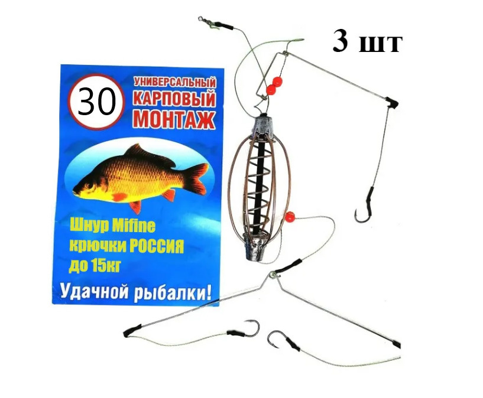
Если собрались ловить на донку в первый раз, то рекомендую приобрести уже готовую донную снасть с кормушкой или с грузиком на ваше усмотрение, ведь новичку в рыбалке будет сложно самому делать оснастки, которые требуют множества материалов и умений.
Только запомните, что перед рыбалкой нужно запастись оснастками, леской и крючками, ведь обрывы и зацепы снасти в донной ловле – не редкость.
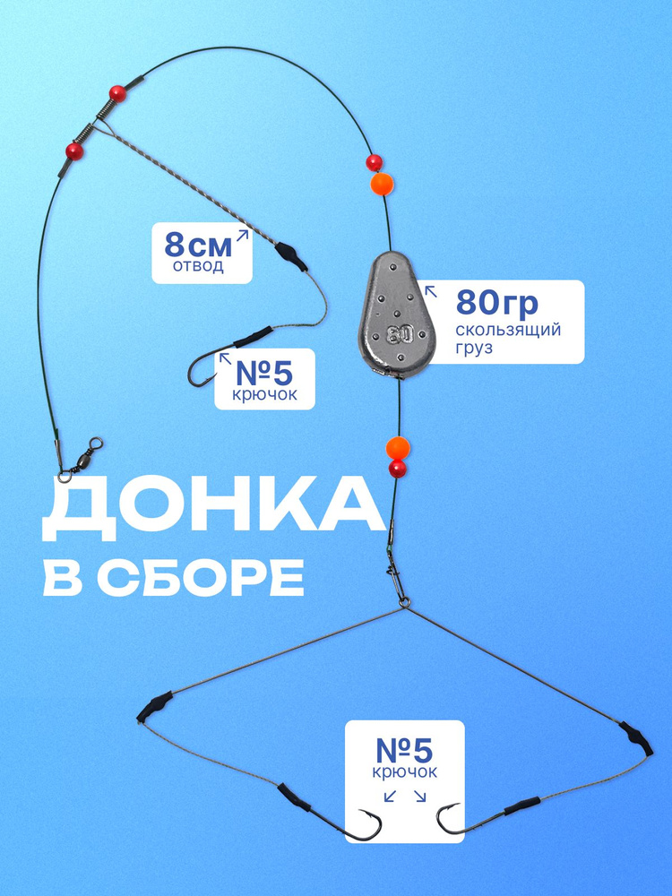
Донка – довольно простой способ ловли. Чтобы начать ловить, нужно лишь наполнить кормушку прикормкой, насадить наживку и закинуть удочку в нужное место. Для определения поклевки нужно смотреть на кончик удилища, если он начал дергаться, то следует подсекать, также можно установить на кончик удилища сигнализатор поклевки (колокольчик), который издаст звуковой сигнал при поклевке рыбы.

При ловле на донку также важно перезабрасывать удилище. Если после заброса поклевки не следуют в течение 30 минут, то нужно достать наживку на берег, наполнить кормушку новой прикормкой, насадить новую наживку (если предыдущую съели) и закинуть удилище в то же место, но можно закинуть и в другую точку, чтобы охватить большую область водоема. Все это нужно для того, чтобы создать зону ловли из нескольких точек, которые интересны рыбе.
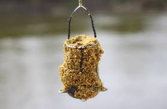
Подробнее о забросе удилища в разделе “Навыки рыболова”
- Фидерные снасти:
- 3.0–3.3 м - для прудов, озёр, небольших рек
- 3.6 м - универсальный вариант
- 3.9 м - дальний заброс, крупные реки
- Тест - от 40г до 160 г в зависимости от веса кормушки
- Размер 3000–4000
- Передний фрикцион
- Ровная укладка лески
- Металлическая шпуля (желательно)
- Оснастка фидера:
- Основная леска(леска или плетенка, которая намотана на катушку) 0.12мм-0.18мм, рекомендуемо для новичка - 0.14мм
- Кормушка для фидера(бывают разных форм и размеров) - цепляется за дно, 40г-160г в зависимости от условий
- Поводковый материал(леска) - флюрокарбон, нейлон, должна быть тоньше основной лески на 2мм-3мм
- Крючки №6–12, рекомендуемо - №8
- Карабины с вертлюгами
Фидер
Фидер - это донная удочка с чувствительной вершинкой (квивертипом), которая показывает поклёвку.
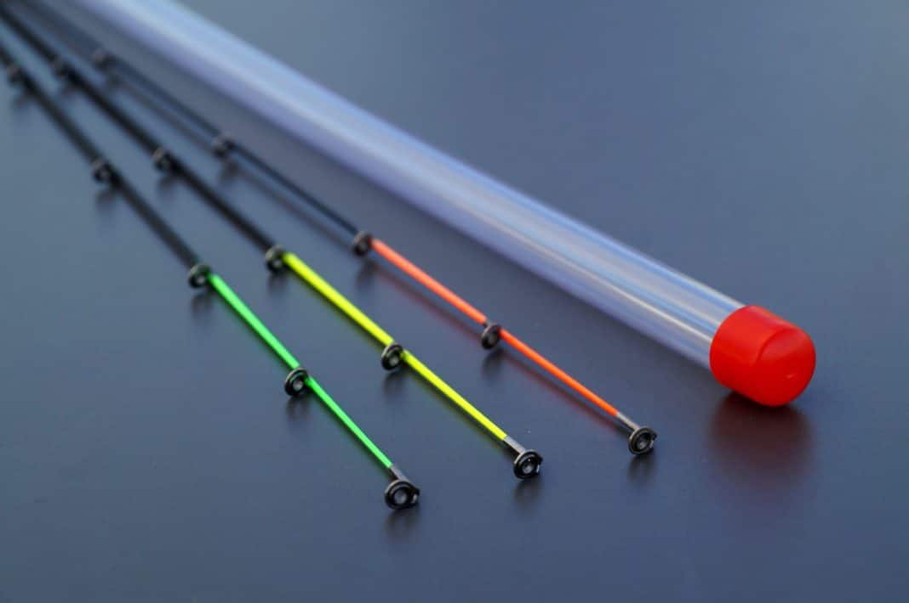
Фидерное удилище:

Катушки для фидерной ловли ловли:
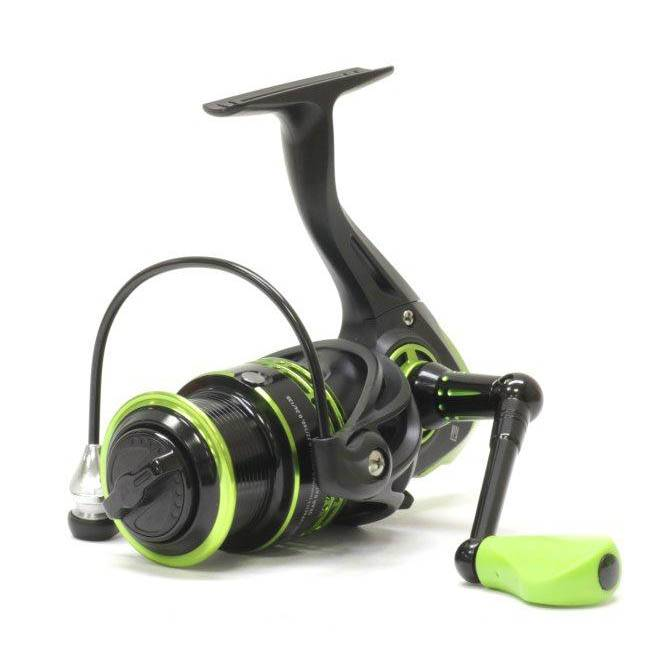
Подробнее о выборе катушки и удилища в разделе “Навыки рыболова”
Для фидера существует большое количество оснасток, каждая из которых подходит для определенных условий. Самая популярная, эффективная и простая в создании – патерностер(петля Гарднера), этот монтаж мы и рассмотрим в данной статье.
Для патерностера нам понадобиться:
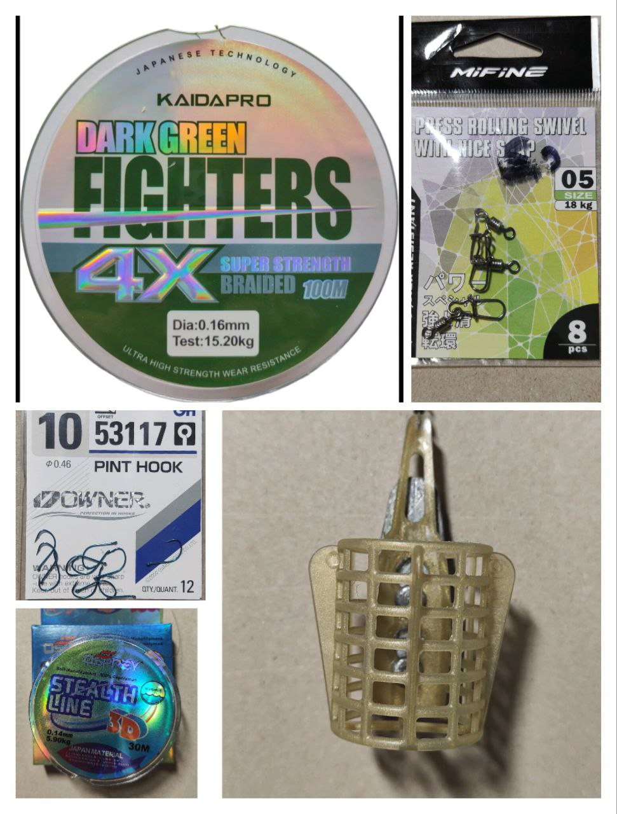
Как сделать поводок?
Для начала нужно отрезать отрезок лески нужной длинны(30см-120см), учитывайте, что 2-4 см от этой длины будут потрачены на узлы, выберите крючок для поводка и привяжите его к леске специальным узлом, на другом конце лески нужно сделать петлю узлом “восьмерка”, чтобы можно было быстро прикреплять поводок к оснастке. При вязании узлов не забудьте смочить кончик лески слюной или водой, чтобы избежать ее нагрева! Рыболову лучше иметь с собой много различных, связанных заранее поводков. Особенно для рыбалки на незнакомом водоеме. Частая замена крючков на фидерной снасти во время ловли – нормальная практика. Это вместе с системой прикармливания, точечными забросами, правильными монтажами и делает фидер таким уловистым. Поводки применяются разные – в зависимости от условий водоема, вида рыбы и применяемого монтажа.

Основная часть монтажа:
В отличии от оснасток на донку, фидерные оснастки лучше научиться вязать самому, это кажется сложным, но на самом деле намного легче чем кажется. Для самой простой и лучшей фидерной оснастки – патерностер, вам понадобится: поводки, кормушка (40-150) г, леска (как на катушке) или основная леска вашей снасти, карабины и вертлюги по желанию. Сначала нужно сделать петлю узлом “восьмерка” на конце лески, потом отложить на леске расстояние в 7-8 см от петли, сложить леску в два раза, эта сложенная часть не должна превышать 5см, а также сложенная часть должна находиться на расстоянии 4-5 см от первой петли, из этой сложенной части нужно связать петлю, все тем же узлом “восьмерка”, после всех манипуляций нужно прикрепить поводок к первой петле способом “петля в петлю”, также нужно продеть во вторую петлю карабин с прицепленным к нему вертлюгом, на этот карабин можно прикрепить кормушку перед рыбалкой. Почти готово, данный монтаж можно сделать на отдельном кусочке лески или на основной леске катушки, если вы сделали на катушке, то перед тем, как нацепить поводок и кормушку, нужно продеть петли через все кольца удилища, а если монтаж был сделан отдельно, то на конце монтажа и на конце лески нужно снова сделать петлю узлом “восьмерка”, а потом прицепить оснастку на леску, продетую через кольца, способом “петля в петлю”. Поздравляю, оснастка “Патерностер” готова!

Подробнее о рыболовных узлах в разделе “Навыки рыболова”
Как ловить на фидер?
В отличии от донки, фидер является очень техничным и аккуратным способом ловли. Название “feeder” в переводе с английского означает кормушка, ведь рыбаку нужно создать своеобразную “кормушку” на дне реки или озера, для привлечения большого скопления рыб.
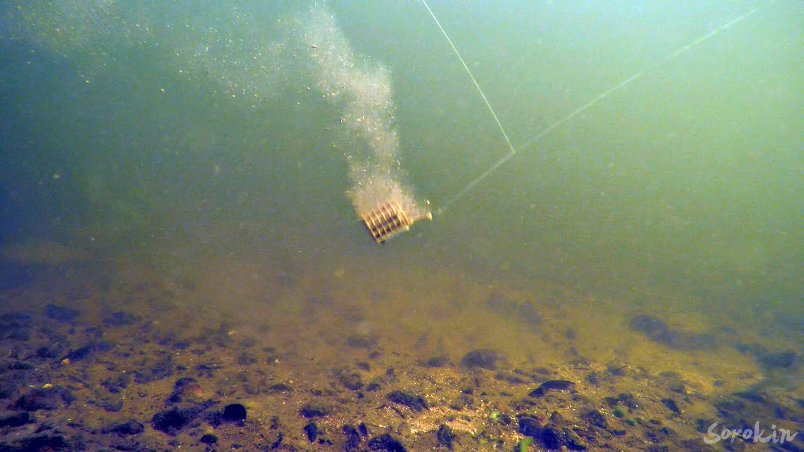
Один из важнейших аспектов фидерной ловли – это установления клипсы, то есть ограничение дальности заброса оснастки. Клипса – это небольшой зажим (металлический или пластиковый), предназначенный для фиксации конца лески или шнура. Чтобы правильно выбрать длину для клипсования, нужно найти благоприятное место для рыбы (подводные ямы и бровки), чтобы это сделать необходимо проверить рельеф дна маркерным грузом. Маркерный груз — это специальное рыболовное грузило (часто с грунтозацепами или шипами), используемое для исследования рельефа, глубины и состава дна водоема, такой груз можно найти в любом рыболовном магазине, данный грузик нужно привязать к концу лески или зацепить за карабин, после нужно закидывать его в воду на разную дистанцию и считать время, за которое он опуститься на дно, там где время будет больше и есть ямка или бровка, где скорее всего есть плотва или лещ. Чтобы понять опустился ли груз на дно, нужно лишь наблюдать за кончиком фидерного удилища, так как он чувствителен, то при попадании грузика на дно квивретип немного подергается. Когда вы найдете благоприятную дальность для ловли, нужно зацепить часть лески возле катушки за клипсу. Полезный совет: если вам сложно обращаться с маркерным грузом и устанавливать клипсу, то при наличии других рыбаков на водоеме, можно посмотреть на какую дальность закидывают они или спросить у них совета.
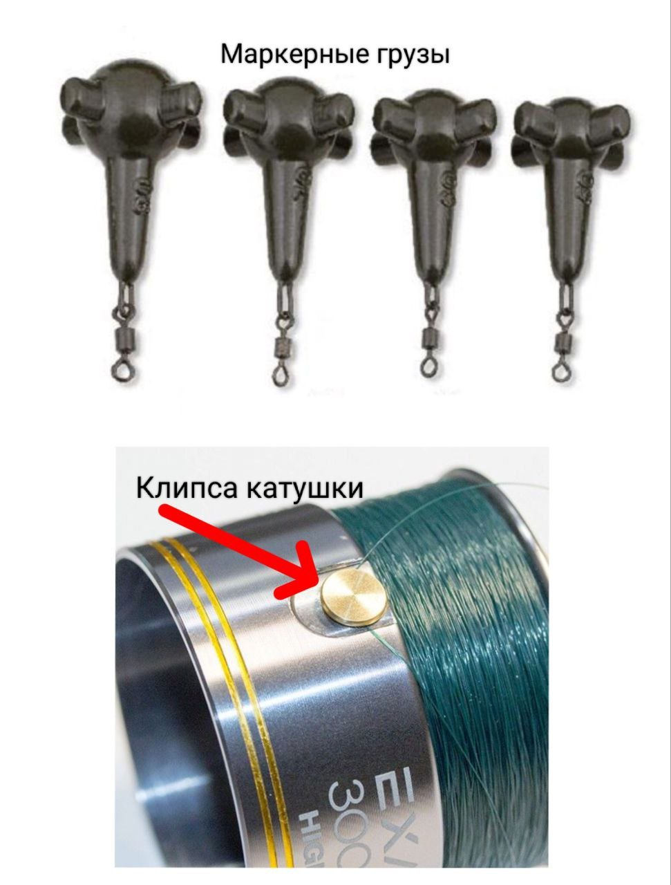
Для начала фидерной ловли, после установления клипсы, нужно, в первую очередь, выбрать поводок, для озер и рек с мелким течением я рекомендую брать поводки 20см-45см в длину, а для водоемов с сильным течением лучше надеть поводок 50см-120см в длину, алгоритм выбора поводка таков – чем сильнее течение, тем длиннее поводок. Следующий шаг – нацепить наживку и засыпать прикормку в кормушку. Хорошо зацепите наживку и плотно набейте кормушку прикормкой, чтобы это все не отлетело при забросе. Важно: при забросе с использованием клипсы нужно сначала держать удилище под 45-60 градусов, но как только вы увидите, что наживка достигает воды нужно приподнять удочку и держать ее под 70-80 градусов, также не забудьте проверить, что на кончике удилище ничего не запуталось, в противном случае может произойти отхлест, и вся драгоценная оснастка улетит в воду.
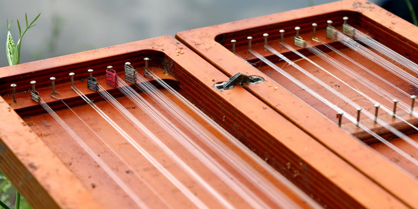
По началу ловли нужно сделать 3-4 прикормочных заброса, когда вы просто докидываете прикормку на точку ловли, ждете пару секунд и достаете оснастку из воды, это нужно для привлечения рыбы именно к твоей точке. Дальше нужно закидывать оснастку с прикормкой и наживкой каждые 10-15 минут, не забывайте каждый раз наполнять кормушку прикормкой, ведь ее постоянно будет вымывать течение, создавая прикормочное пятно на дне. Чтобы определить поклевку можно использовать сигнализаторы поклевки, как на донке, или следить за кончиком удилища, если он начнетрезко дергаться и уводить, то нужно подсекать и аккуратно доставать рыбу. Если не клюет в течение 1 часа, то следует поменять наживку или прикормку, но если даже это не исправило ситуацию, то можно поменять место ловли и начать закармливать другую точку.
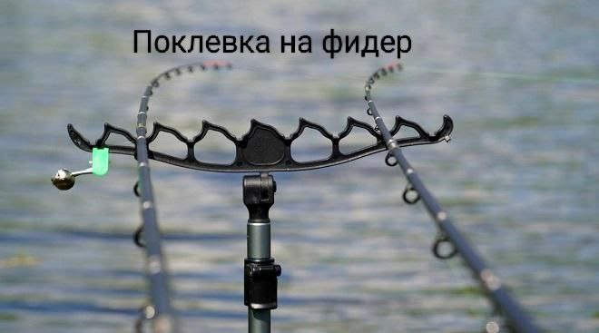
Подробнее о забросах в разделе “Навыки рыболова”
Прикормка для донки и фидера
Прикормка для рыбы — это смесь (основа + связующие), привлекающая рыбу к месту ловли и удерживающая ее там. Основой служат панировочные сухари, молотое печенье, каши (перловка, пшено). Основу для прикормки можно сделать самому из крупы, теста, хлеба и даже из халвы и творога, но для начинающего рыбака рекомендуется купить готовую прикормочную основу в рыболовном магазине, они бывают разных вкусов и запахов, часто на упаковках пишут для какой рыбы предназначена данная прикормка. Как связующие для прикормки следует использовать обычную воду.
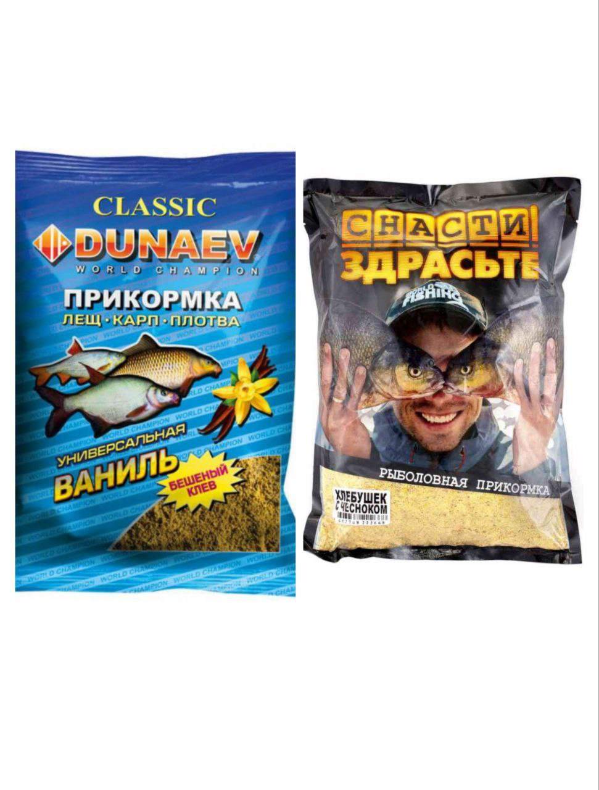
Чтобы изготовить прикормку для донки нужно насыпать прикормочную основу в ведро или другую не протекающую емкость и добавлять туда воды, попутно перемешивая содержимое, до того момента пока прикормка по структуре не станет напоминать пластилин, ведь прикормка должна плотно держаться в кормушке.
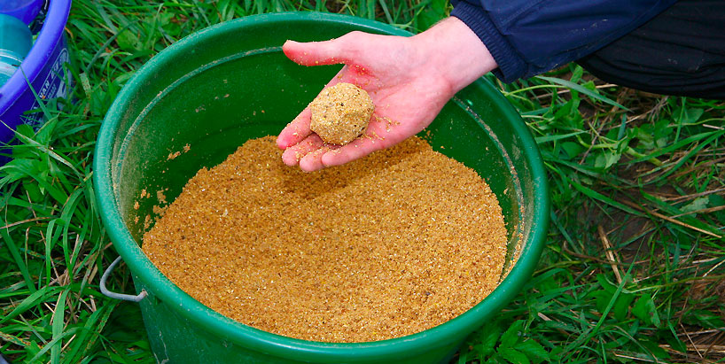
Для фидера процесс приготовления прикормки почти не отличается, только при ловле на фидер прикормка должна быть рыхлая и хорошо размываться в воде, но при этом должна хорошо лепиться, чтобы понять готова ли прикормка, нужно попытаться слепить прикормку, а потом разломать ее, если прикормка хорошо лепиться, но при этом легко крошиться, то она готова. В среднем для полной пачки прикормки необходимо 300-500мл воды.
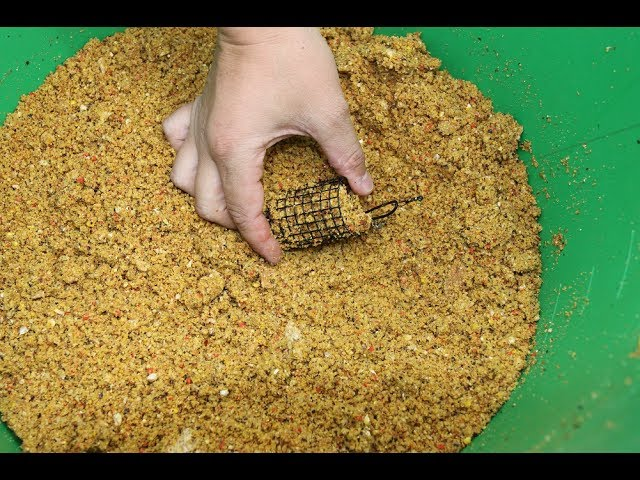
Наживки для донки и фидера
Наживки для донки и фидера ничем не отличаются между собой. В основном в донной ловле используются те же наживки, что и в ловле на поплавок. Их также можно разделить на два вида:
Животные наживки: опарыши, черви, выползки, мотыль, насекомые. Растительные наживки: кукуруза, овсянка, перловка, различные каши и тесто.
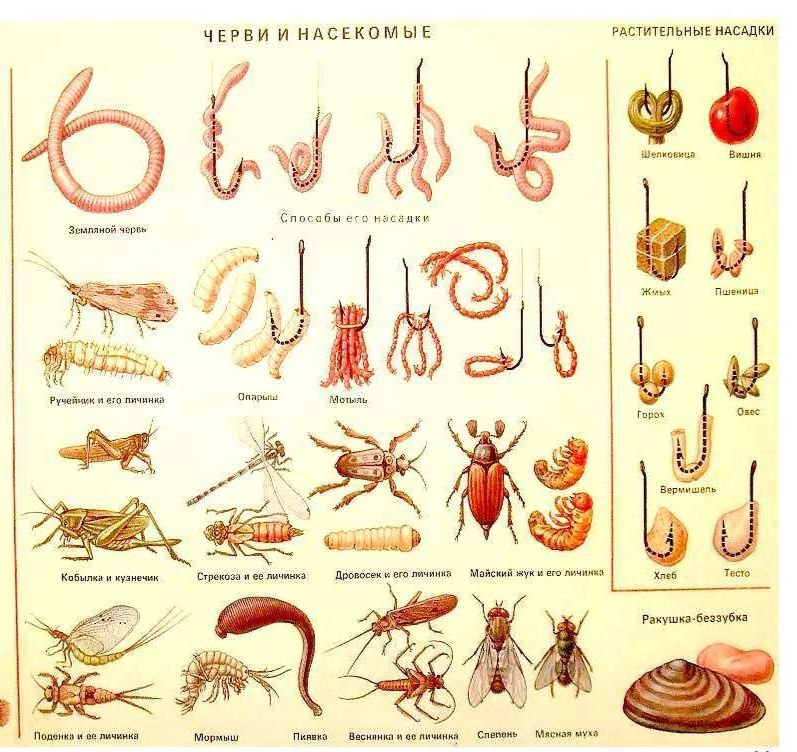
Если вы стремитесь поймать леща, то рекомендую использовать перловку и опарыша, мотыль больше подойдет для рыбы поменьше по типу плотвы или чехони, если собрались охотиться за сазаном, то лучше использовать кукурузу или тесто, а если хотите половить карасей, то лучше насадить червя.
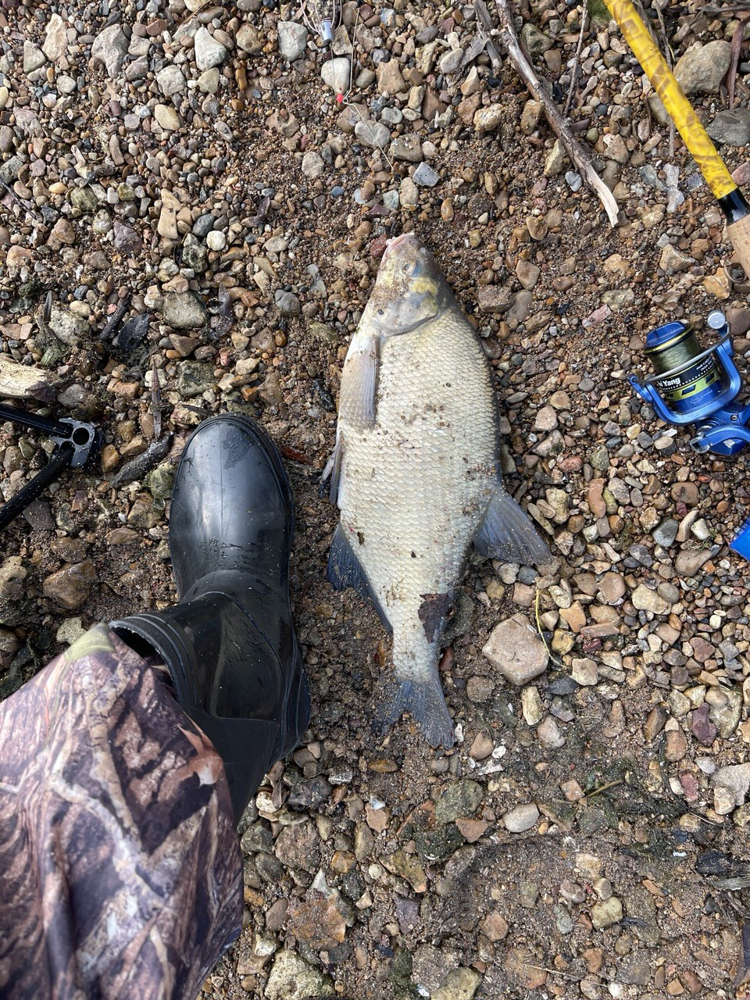
Какую рыбу можно поймать в России на донку и фидер?
В реках и озерах России обитает множество видов рыб, которые живут у дна, их и ловят на фидер и донку. С помощью донной ловли можно поймать карася, плотву, сазана, окуня, чехонь, голавля, язя, даже сом может попасться на крючок, но самой частой целью рыболовов является лещ. Лещ живет в ямах и бровках рек, он любит чистоту и большую глубину, лещ часто встречается в Российских реках, особенно в Волге и Белой, но, несмотря на его распространенность, леща не так-то просто поймать, чтобы это сделать, нужно иметь терпение и тщательно подготовиться к рыбалке.
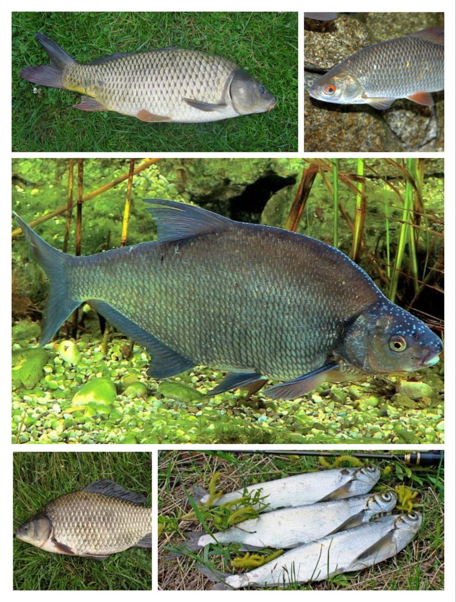
Где и когда лучше ловить на фидер и донку?
Самыми лучшими местами для ловли являются широкие чистые реки с множеством ям и углублений, в них обитает лещ, плотва, окунь, голавль и многие другие рыбы. Если же хотите поймать сазана или карася, то следует рыбачить на озерах. Чтобы успешно рыбачить на донку и фидер, нужно правильно выбирать время ловли, весной можно рыбачить в 4:00-13:00 и в 16:00-20:00, но сначала нужно ознакомиться с законом о нерестовом запрете в весеннее время. Большинство людей ходят на рыбалку летом, для успешной ловли в это время года надо вставать пораньше около 4:00-5:00, и лучше не задерживаться на рыбалке позднее 12:00, ведь после этого времени наступает жара, что плохо влияет на клев, конечно можно ходить и на вечернюю рыбалку в 16:00-00:00, но это будет менее безопасно и удобно для новичка. Осенью время рыбалки совпадает с весенним, хотя большинство рыболовов рекомендует рыбачить на спиннинг в осеннее время.
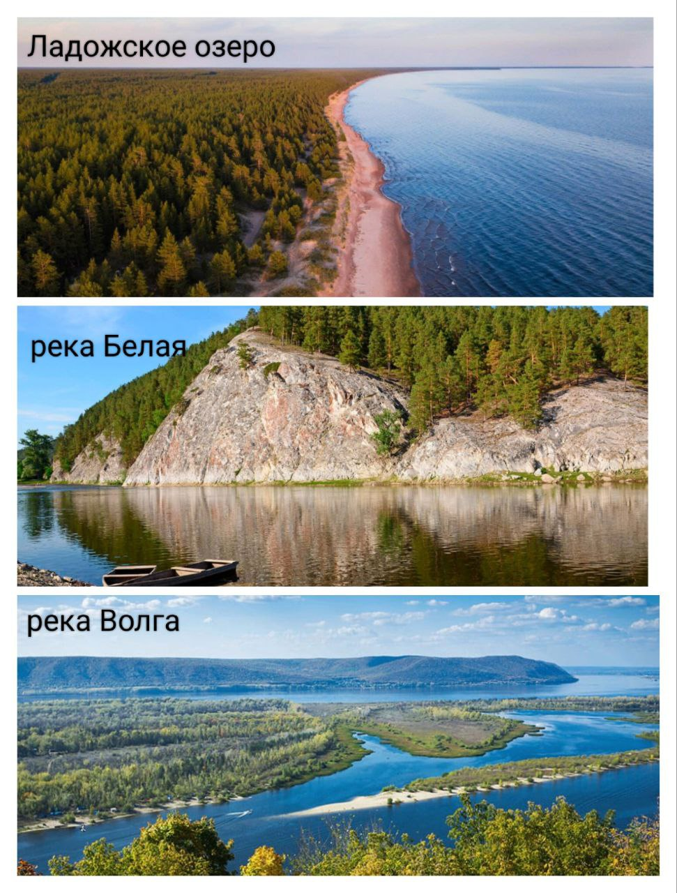
Спиннинговая ловля